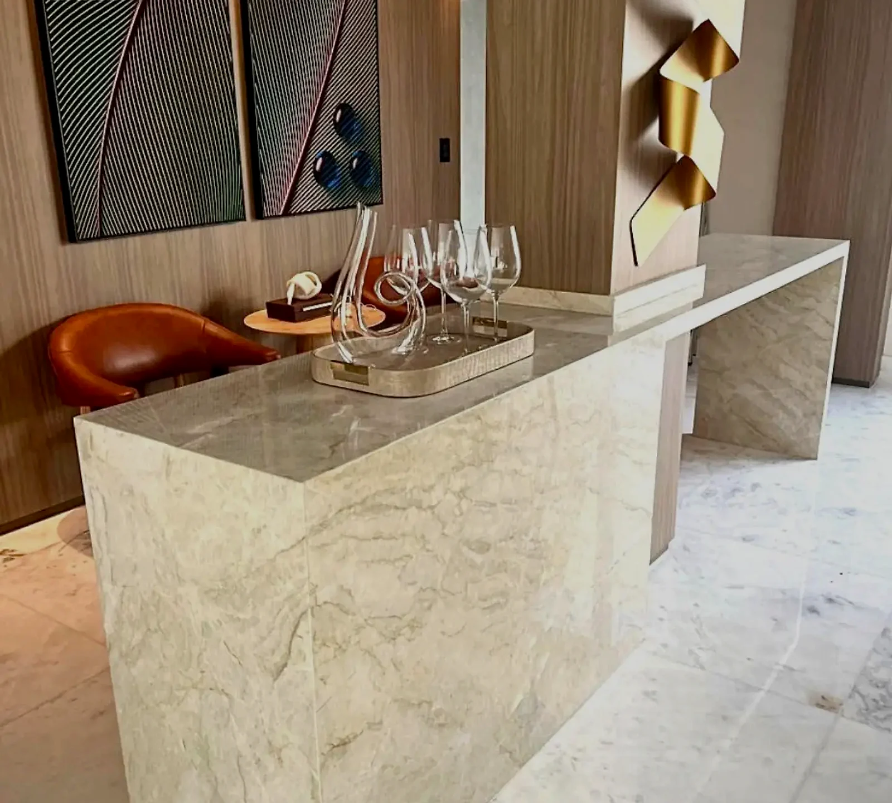

Escolha com confiança
A pedra ideal vai além da estética
Cada ambiente exige uma escolha técnica. Ajudamos você a considerar o uso diário, a exposição à água e ao calor, a resistência, a manutenção e o acabamento de cada material.
Mármores, granitos, quartzos e quartzitos têm níveis diferentes de resistência. Indicamos o material certo para cozinha, banheiro, área gourmet ou área externa.
Polido, levigado ou escovado: mostramos qual acabamento combina melhor com o uso e com o desenho do seu projeto.
A cuba esculpida é feita sob medida na própria pedra: esconde o ralo, elimina emendas e traz um visual minimalista para lavabos e banheiros.
Cada pedra tem suas características e exige cuidados específicos. Orientamos você sobre a forma certa de cuidar da sua para ela durar muitos anos.